Round B expresses the tab's look as a token sheet with numbers in it, spends that sheet on a real capture at three widths plus the docked rail, and is honest about the two things a restyle cannot fix: the wave lane has no CSS at all, and the description preview is measured from a line box the type change invalidates.
The reader's request, from the row this worktree was cut for: keep all the information and the structure, reinvent the look and the feel, stay near the current colour theme, make it modern, and do the headless research before and after.
So the shape here is a visual system, not a redesign. Nothing in the tab is re-laid-out except the wide card's columns, no sentence the tab writes is deleted, no field, chip, count, link, control, empty state or keyboard path is removed. What changes is the set of values those things are drawn with, and every value below is a number with a job, measured off the running tab before it was changed.
Round A has a report in this repository. I did not open it, did not search for it, and did not ask its author anything. I also did not read any file under the sibling worktree. The brief's point is that two opinions only mean something if they were reached separately, so the only inputs here are the product's source, the running tab in a sandbox, and 19 photographs of it. If round A and round B agree on something, that agreement was not arranged.
public/, lib/, server.js or any product file. Before this report: git status --short printed nothing but the untracked docs/assets/initiatives-redesign/ this round adds.127.0.0.1:7331 was never addressed by the capture run. The fixture boots server.js with its own WAG_HOME under scratch, on a free port (section 8.1).Nine type sizes, twenty line boxes, three weights and no shadows in 152 elements. Those are the numbers the rest of this document is spent on.
I photographed the tab in the fixture panel's own data: four initiatives (one empty, one with a missing tree, one with a long description full of unbreakable tokens, one with two waves), nine worktrees across three projects, two assistant queues. One initiative is open at a time, which is the tab's own rule. The pane is the floating assistant at 1440, 1024 and 768 wide, and the docked rail at 1440 and 768, because the pane ranges from 347 to 1438px across those two frames and a look that only works at one width is not a system.
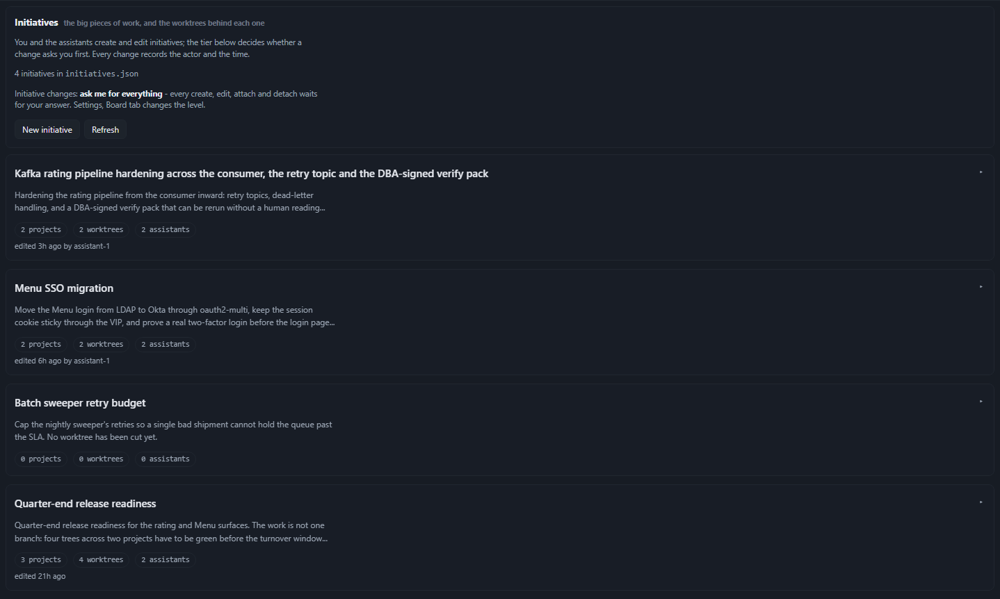
#as-initiatives · pane 1438x1400 · command node capture.mjs, see 8.1. The head is a card, the four cards below it are cards, and a card's name is 15px while the pane's own title is 13.5px.| measure | the tab today | where it comes from |
|---|---|---|
| elements drawn in the pane | 152 | a computed-style sweep of every node under #as-initiatives |
| type sizes in use | 9 10, 10.5, 11, 11.5, 12, 12.5, 13.5, 14, 15 | 13.5px base, 14px inherited from body, and one rule per component |
| line boxes in use | 20 | every component carries its own multiplier (1.35, 1.4, 1.45, 1.5, 1.55) |
| weights | 400 · 600 · 700 135 / 14 / 3 | 700 is used 3 times, on the pane title and two section heads |
| radius values | 6 0, 4, 6, 7, 8, 999 | the 7px is one element; the card is 8px public/style.css:4834 |
| shadows | 0 | no box-shadow in the whole block |
| bordered elements | 53 | mostly 1px --line |
lane rules (border-left > 1.5px) | 0 | grep -c '\.wave-lane' public/style.css is 0: the lane has no rule at all |
| open card height, pane 1440 | 673px | one initiative, two waves, three lanes, four members |
| open card height, pane 768 | 895px | same card, single column |
| controls | 14 at 28/32px narrowest 37px | the 28px floor the gate already enforces |
--line on the card | 1.12:1 | measured, not estimated: rgb(33,39,48) on rgb(24,29,38) |
| colour literals in the block | 41 | 183 lines, 149 declarations, public/style.css:4827-5009 |
Two of those numbers explain most of what the tab feels like. The first is 1.12:1: a card against the canvas is a fill you cannot see, so every card edge in the tab is actually carried by the text inside it, and the eye reads the whole pane as one undifferentiated field with lines of words on it. The second is 9 sizes and 20 line boxes in 152 elements: there is no step that means "this is a name" and no step that means "this is a hint", so the reader has to read to find out what is a heading. Nothing here is a matter of taste; both are countable.
The pane's own title is drawn inside the same card chrome as an initiative, at 13.5px/700 (public/style.css:4838-4839). A card's name is 15px/600 at any pane wider than 1000px (public/style.css:4995) and 13.5px below that. So at a wide pane the page title is smaller than the names it introduces, and only its weight tells the reader it is a title. That is the single clearest reason the top of the tab reads as "one more card" rather than as a page.
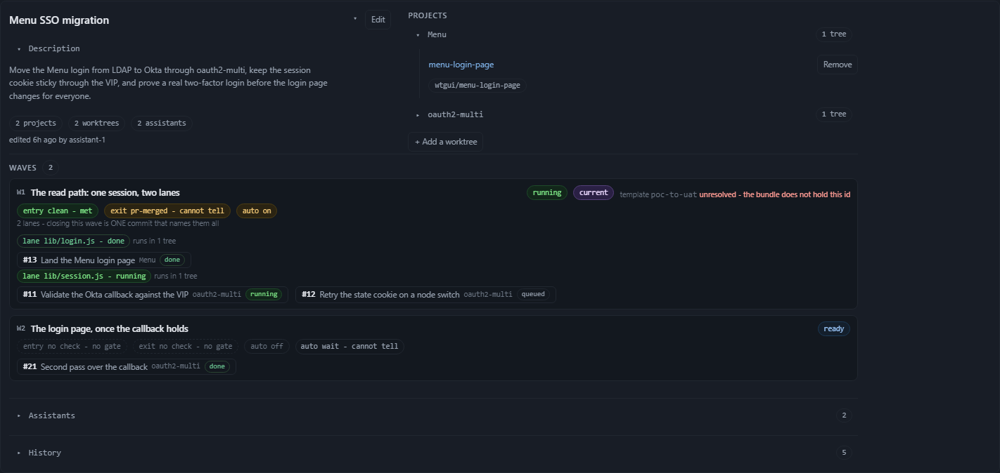
#as-initiatives [data-init-card="init_sso"]. Grid 543.375px 640px at this pane: the words get 543, Projects gets 640, and the rows inside Projects put "Menu" at one end of 640 and "1 tree" at the other. The wave block is the only thing in the card with a box of its own, and its lanes are flat text with no rule, no bed and no indent.A token is a value with a job. If two tokens can hold the same value they are one token, and if a token has no job it is a variable. The sheet below has 41 declarations and every one of them is spent somewhere in section 4.
This block is drawn by the report's own stylesheet with the same numbers the tab would use. It is here so a reader can judge the steps before looking at a photograph of them.
The right-hand column is the point: a token that does not replace a measured value is decoration. Every "replaces" cell was read off the running tab before the sheet was added.
| token | value | replaces, as measured today |
|---|---|---|
--t-head | 18 / 24 / 600 | 13.5px / 1.35 / 700 on the pane title (style.css:4839), which is smaller than a card's name |
--t-title | 15 / 20 / 600 | 13.5px/1.35 base (4851) and 15px at a wide pane (4995): one name, two sizes, one of them undeclared |
--t-body | 12.5 / 19 | 12px/1.55 description (4853), 12/17.4 tree names, 12.5/17.5 project rows, 14/1.45 inherited body |
--t-meta | 11.5 / 17 | 11.5/1.45 help (4840), 12/17.4 store name, 12/normal on two buttons |
--t-micro | 10.5 / 16 | 10.5/1.35 caret, 10.5/1.5 section heads, 11/1.5 chips (1122) |
--ls-tight | -0.01em | 0 on names, 0.66px on two elements, 0.55em on no element (the caps tracking was already 0) |
--ls-caps | 0.07em | nothing: uppercase heads had no tracking at all |
--s-0..--s-6 | 0, 4, 8, 12, 16, 24, 32 | a padding set of ten values (0, 2, 4, 5, 6, 7, 8, 9, 10, 12) and a gap set of five (4, 6, 8, 10, 24) |
--s-inset | 2px | 2px appears twice as an optical inset; it is named so it cannot grow into a spacing step |
--r-1..--r-4, --r-pill | 4 / 6 / 8 / 12 / 999 | {0, 4, 6, 7, 8, 999}: the 7px was one element, the card was 8, and nothing expressed nesting |
--bw | 1px | 1px everywhere, plus 2px on the focus ring: one width, two jobs |
--line-hairline | color-mix(--line 78%, --dim) resolves to rgb(60,66,77), 1.24:1 | --line at 1.12:1: a split inside a plane has to be visible, not just present |
--line-control | color-mix(--line 40%, --dim) resolves to rgb(124,135,152), 4.65:1 | controls whose edge was --line at 1.12:1, i.e. a button you could not see the shape of |
--line-focus | #7fb2e8, 7.59:1 | already the ring colour; it keeps its value and gains a name and a radius rule |
--e-0..--e-2, --e-ring | none · lit edge · lit edge + 2px · 2px | nothing: zero shadows in 152 elements. On a #10141A canvas a 35% black shadow moves one channel by 6; a 4.5% white inset moves it by 9 |
--d-control, --d-control-lg, --d-pill | 28 / 32 / 18 | 14 controls already at 28 and 32, but chips drew at five line heights (14.18 to 17.5) because each rule picked its own padding |
--d-card-pad, --d-card-gap | 12 / 12 | 12 and 12: unchanged, and now a value the folds inherit instead of repeat |
--ink-strong, --ink, --ink-meta | --text · --dim · #7C8798 | --text 13.90:1, --dim 6.70:1, --dimmer 3.58:1. Every word that carried a fact at 3.58:1 moves to 4.65:1 |
--tone-* (9 triples) | ok, done, wait, bad, info, unknown, current, neutral, link | 41 literals across 183 lines: each triple is the ink, the bed and the edge a state was already using |
--surface-pressed | #232a35 | one hand-painted pressed colour that had no name |
Every surface is a reference to a variable the reader's Panel contrast slider already owns. CONTRAST_MAX at public/app.js:14891 rewrites nine surface variables (--console, --bg, --surface, --card, --panel, --band, --hover, --panel-2, --line) from the slider, default 15%, through applyContrast at public/settings.js:615. A restyle that hard-codes #181d26 as the card would look right at one slider position and fight the reader at every other. So the two boundary greys are derived: color-mix over --line and --dim, with a literal fallback for a browser without color-mix. The hairlines move when the slider moves.
They are layered in this order and each one has exactly one job. tokens declares values and paints nothing. roles renames the tab's 41 colour literals to those values, value for value. apply is the actual restyle. The separation is what makes the next section measurable.
:root {
/* type: five steps, every one with a fixed line box in px, never a multiplier */
--t-head: 18px; --lh-head: 24px; --fw-head: 600;
--t-title: 15px; --lh-title: 20px; --fw-title: 600;
--t-body: 12.5px; --lh-body: 19px;
--t-meta: 11.5px; --lh-meta: 17px;
--t-micro: 10.5px; --lh-micro: 16px;
--ls-tight: -0.01em;
--ls-caps: 0.07em;
/* space: a 4px base; 2px exists only as an optical inset inside a control */
--s-0: 0; --s-1: 4px; --s-2: 8px; --s-3: 12px; --s-4: 16px; --s-5: 24px; --s-6: 32px;
--s-inset: 2px;
/* radius: monotone with nesting, so depth is readable without a shadow */
--r-pill: 999px; --r-1: 4px; --r-2: 6px; --r-3: 8px; --r-4: 12px;
/* border: one width, three jobs */
--bw: 1px;
--line-hairline: #3C424D;
--line-hairline: color-mix(in srgb, var(--line) 78%, var(--dim));
--line-control: #6A727E;
--line-control: color-mix(in srgb, var(--line) 40%, var(--dim));
--line-focus: #7fb2e8;
/* elevation: a lit edge first; on this canvas a shadow can only darken by 6 channels */
--e-0: none;
--e-1: inset 0 var(--bw) 0 rgba(255, 255, 255, .045);
--e-2: inset 0 var(--bw) 0 rgba(255, 255, 255, .05), 0 1px 2px rgba(0, 0, 0, .30);
--e-ring: 2px;
/* density */
--d-control: 28px; --d-control-lg: 32px; --d-pill: 18px;
--d-card-pad: 12px; --d-card-gap: 12px;
/* colour roles: surfaces, all still owned by CONTRAST_MAX */
--surface-canvas: var(--bg);
--surface-card: var(--card);
--surface-sunken: var(--surface);
--surface-inset: rgba(0, 0, 0, .16);
--surface-hover: var(--hover);
/* colour roles: ink, measured on --card */
--ink-strong: var(--text); /* 13.90:1 */
--ink: var(--dim); /* 6.70:1 */
--ink-meta: #7C8798; /* 4.65:1, replaces --dimmer at 3.58:1 */
/* colour roles: a triple per state; the values are today's, named */
--tone-neutral-ink: var(--dim); --tone-neutral-bg: transparent; --tone-neutral-line: var(--line);
--tone-ok-ink: #7ee787; --tone-ok-bg: var(--green-bg); --tone-ok-line: #1f4a2a;
--tone-done-ink: #6fcf97; --tone-done-bg: transparent; --tone-done-line: #2a4432;
--tone-wait-ink: #f0c674; --tone-wait-bg: var(--amber-bg); --tone-wait-line: #4d3d12;
--tone-bad-ink: #ff9c94; --tone-bad-bg: #2a1a1a; --tone-bad-line: #4a2a2a;
--tone-bad-solid: #e5534b; --tone-bad-soft: #ffb4ac;
--tone-info-ink: #9ecbff; --tone-info-bg: var(--blue-bg); --tone-info-line: #1c3a56;
--tone-unknown-ink: #c8a6ff; --tone-unknown-bg: var(--violet-bg); --tone-unknown-line: #3b2d5c;
--tone-current-ink: #ecd9ff; --tone-current-bg: #2a2044; --tone-current-line: #55407a;
--tone-link-ink: #7fb2e8; /* 7.59:1, tree names and branch links */
--surface-pressed: #232a35;
}Each declaration below replaces a literal that the product block already used, with the same value. Injected on its own it changes nothing, which is the point: it proves the sheet is a naming, not a repaint. Section 4.3 measures that claim (152 elements compared, 0 changed).
#as-initiatives .chip.good, .wave-mstate.is-running, .wave-state.is-running { color: var(--tone-ok-ink); border-color: var(--tone-ok-line); background: var(--tone-ok-bg); }
#as-initiatives .chip.bad, .wave-unresolved, .wave-ask.is-bad { color: var(--tone-bad-ink); border-color: var(--tone-bad-line); background: var(--tone-bad-bg); }
#as-initiatives .chip.warn, .wave-gate.is-unknown, .wave-auto.is-on { color: var(--tone-wait-ink); border-color: var(--tone-wait-line); background: var(--tone-wait-bg); }
#as-initiatives .chip.info, .wave-state.is-ready { color: var(--tone-info-ink); border-color: var(--tone-info-line); background: var(--tone-info-bg); }
#as-initiatives .wave-current { color: var(--tone-current-ink); border-color: var(--tone-current-line); background: var(--tone-current-bg); }
#as-initiatives .wave-state.is-done, .wave-mstate.is-done { color: var(--tone-done-ink); border-color: var(--tone-done-line); }
#as-initiatives .wave-state.is-unknown, .chip.live { color: var(--tone-unknown-ink); border-color: var(--tone-unknown-line); background: var(--tone-unknown-bg); }
#as-initiatives .init-tree-name a, .init-branch { color: var(--tone-link-ink); }
/* ... 34 more, all value for value; the full list is the 41 literals in style.css:4827-5009 *//* 0. the pane's base. Today every container inherits body's 14px/1.45, which is where 9 sizes came from. */
#as-initiatives { font-size: var(--t-body); line-height: var(--lh-body); }
/* 1. the page head: no fill, no border, one step above a name */
#as-initiatives > .as-group:first-child { padding: 0 0 var(--s-2); border: 0; background: transparent; box-shadow: none; margin-bottom: var(--s-3); }
#as-initiatives > .as-group:first-child h4 { font-size: var(--t-head); line-height: var(--lh-head); font-weight: var(--fw-head); letter-spacing: var(--ls-tight); }
/* 2. the card is a plane: largest radius, the slider's own fill, a lit top edge instead of a shadow */
.init-card { padding: var(--d-card-pad); border-color: var(--line-hairline); border-radius: var(--r-4); box-shadow: var(--e-2); margin-bottom: var(--d-card-gap); }
.init-head-btn { min-height: var(--d-control-lg); border-radius: var(--r-2); }
.init-title, #as-initiatives .init-card .init-title { font-size: var(--t-title); line-height: var(--lh-title); font-weight: var(--fw-title); letter-spacing: var(--ls-tight); }
.init-desc { font-size: var(--t-body); line-height: var(--lh-body); margin: 0 0 var(--s-3); }
/* 3. folds and rows: 32 for a fold, 28 for a row, one radius for both */
.init-proj { min-height: var(--d-control-lg); border-radius: var(--r-2); padding: var(--s-1) var(--s-2); font-size: var(--t-body); line-height: var(--lh-meta); }
.init-tree-name { font-size: var(--t-body); line-height: var(--lh-body); min-height: var(--d-control); }
.init-trees { margin: var(--s-1) 0 var(--s-2) var(--s-4); padding-left: var(--s-3); border-left-color: var(--line-hairline); }
.init-tree { padding: var(--s-2) 0; border-top-color: var(--line-hairline); }
/* 4. one pill: chips were drawn at five line heights because each rule picked its own padding */
#as-initiatives .chip { font-size: var(--t-micro); line-height: var(--d-pill); padding: 0 7px; border-radius: var(--r-pill); letter-spacing: 0; }
#as-initiatives .as-hint { font-size: var(--t-meta); line-height: var(--lh-meta); }
/* 4b. the last six strays: each a product rule carrying its own multiplier (1.35, 1.4, 1.45) */
#as-initiatives .init-caret { line-height: var(--lh-micro); }
#as-initiatives .as-help, #as-initiatives .as-help b { font-size: var(--t-meta); line-height: var(--lh-meta); }
#as-initiatives .mono { font-size: var(--t-meta); line-height: var(--lh-meta); }
#as-initiatives button { font-size: var(--t-body); line-height: var(--lh-micro); }
#as-initiatives .as-group:not(.init-card) { border-radius: var(--r-3); }
/* 5. the wave: the box the lane never had */
.wave-row { border-color: var(--line-hairline); border-radius: var(--r-3); box-shadow: var(--e-1); }
.wave-lane { padding: var(--s-1) 0 var(--s-1) var(--s-3); border-left: 2px solid var(--tone-neutral-line); background: var(--surface-inset); border-radius: 0 var(--r-2) var(--r-2) 0; }
.wave-lane[data-lane-state="running"] { border-left-color: var(--tone-ok-ink); }
.wave-lane[data-lane-state="done"] { border-left-color: var(--tone-done-ink); }
.wave-lane[data-lane-state="parked"] { border-left-color: var(--tone-wait-ink); }
.wave-title { flex: 0 1 auto; max-width: 68ch; font-size: var(--t-body); line-height: var(--lh-body); font-weight: var(--fw-title); }
.wave-template { flex: 1 1 100%; margin-top: var(--s-inset); }
/* 6..8. the wide card: three columns, the slack at the card's own right edge */
@container (min-width: 1160px) {
.init-card:not(.is-titlecard) {
grid-template-columns: minmax(0, 68ch) minmax(300px, 400px) minmax(0, 1fr);
grid-template-areas: "head side ." "desc side ." "chips side ." "waves waves waves" "assist assist assist" "hist hist hist";
column-gap: var(--s-5);
}
}
@container (min-width: 1000px) and (max-width: 1159px) {
.init-card:not(.is-titlecard) {
grid-template-columns: minmax(0, 1fr) minmax(280px, 340px);
grid-template-areas: "head side" "desc side" "chips side" "waves waves" "assist assist" "hist hist";
}
}
/* 9. the ring keeps its 2px and follows its own corners */
#as-initiatives button:focus-visible, #as-initiatives [data-init-card-toggle]:focus-visible { outline: var(--e-ring) solid var(--line-focus); outline-offset: 2px; border-radius: var(--r-2); }Same page, same fixture, same viewport, same clip: the only difference between each pair is that the second image had the token and apply sheets in the page at load.
#as-initiatives · 1456x1400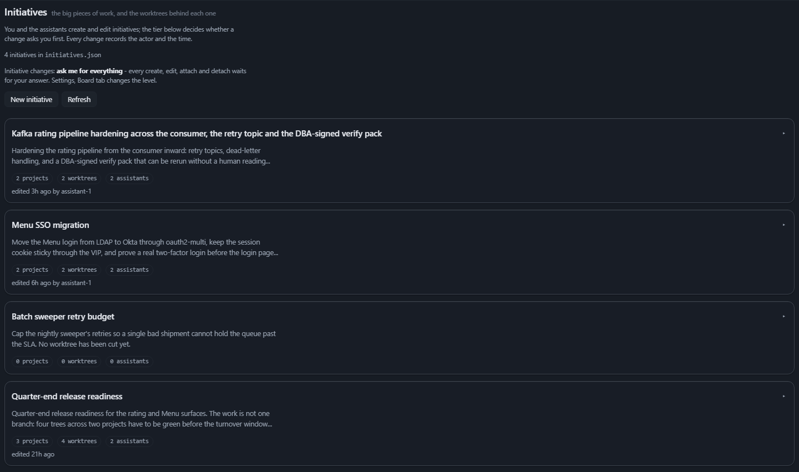
#as-initiatives · 1456x1400At 1440 the change is almost entirely at the top of the tab. The head stops being a card and becomes a page title at 18px, so the four cards below it are the only cards on screen. Each card gains a 12px corner and a lit top edge, which is what makes it a card at all: the fill against the canvas was 1.09:1 before, i.e. invisible.
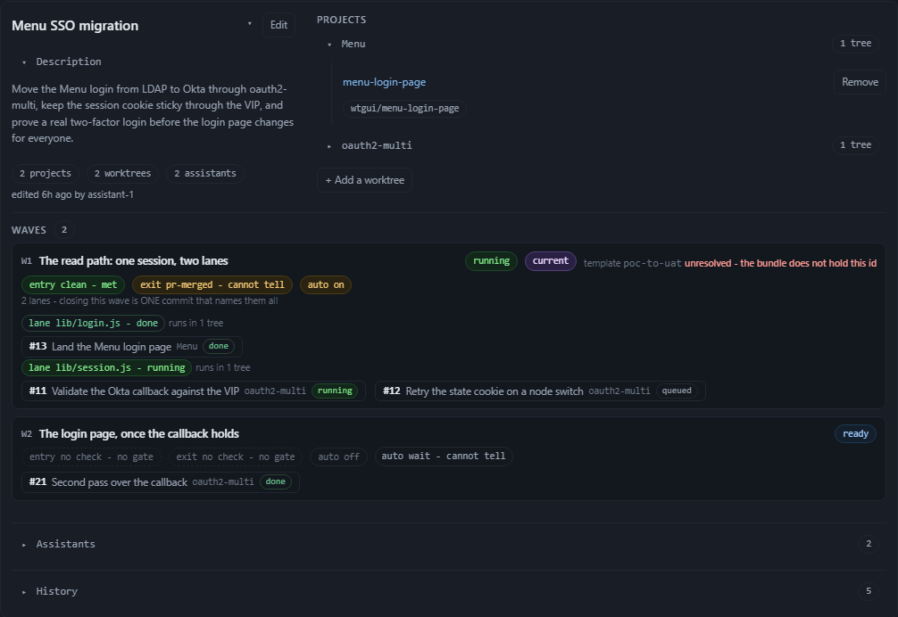
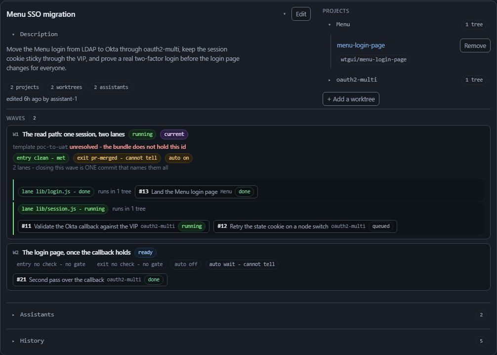
This is the pair that shows the one structural change, and it is a correction rather than a taste. The product's breakpoint at public/style.css:4982 is minmax(0, 72ch) minmax(320px, 640px): the side column's 640px maximum is reached before the word column's 72ch is, so at a 1022px pane the words get 318px and Projects gets 638px. The primary column is the narrow one exactly where the two-column layout turns on. The sheet moves the breakpoint to 1160 and caps the side column at 400, so at 1022 the words get 634 and Projects 340. Nothing is added or removed: the same two columns, the right way round.
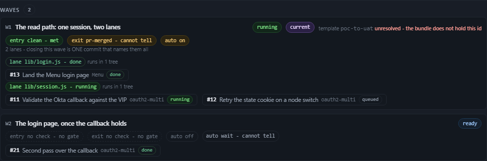
.init-wavefold · 1040x1400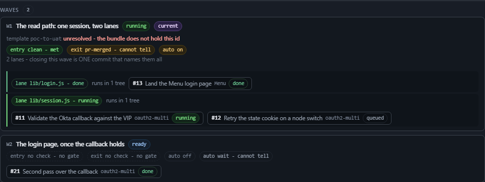
.init-wavefold · 1040x1400The lane is the weakest-drawn region in the tab and it is not a styling opinion: grep -c '\.wave-lane' public/style.css is 0. Every lane in the tab is a bare flex row at the inherited body size with padding 0, no border, no radius and no indent, so "lane lib/login.js - done" and the task below it sit at the same left edge and read as consecutive lines of prose. The sheet gives the lane a 2px left rule coloured by the state waves-lane.js already writes into data-lane-state, an inset bed, and a 6px radius on the right only, so the lane owns its members without becoming a second card. No JavaScript: public/core/waves-lane.js already emits the attribute.
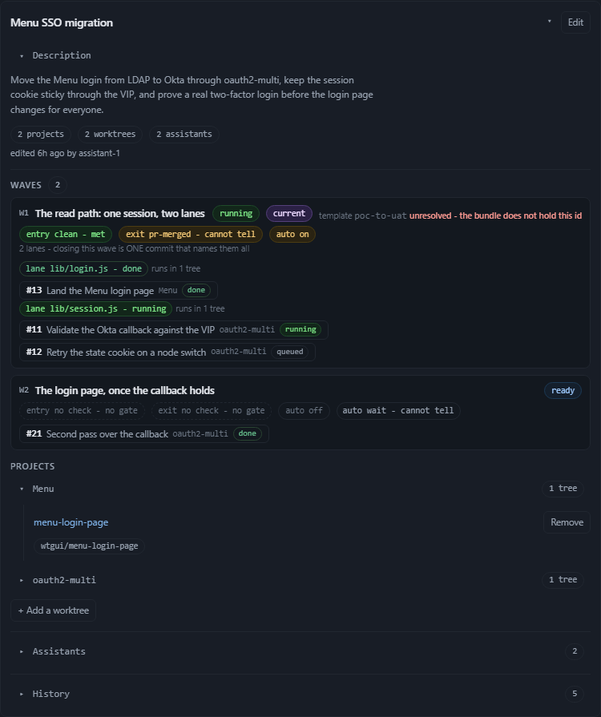
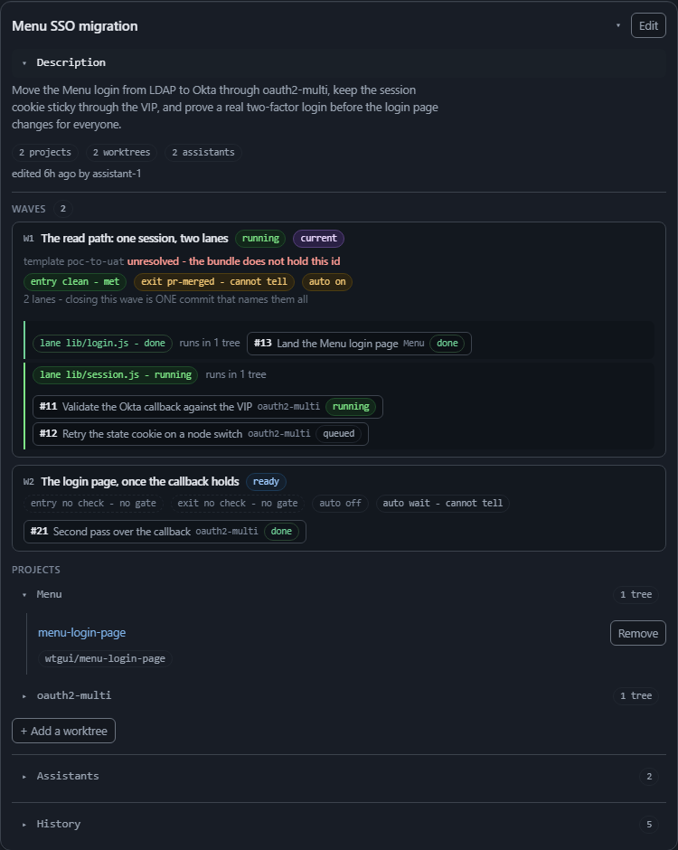
At 768 the card is one column and the sheet keeps it that way. What changes is that the wave's name is no longer squeezed to 180px by the template sentence sitting beside it: the template line takes its own row and the wave head reads W1, the name, then the two state chips, left to right. That costs about 19px per wave, and at this width it tips one lane row into an extra line: the card measures 940px against 895, which is the honest price of the change and it is in the ledger below.
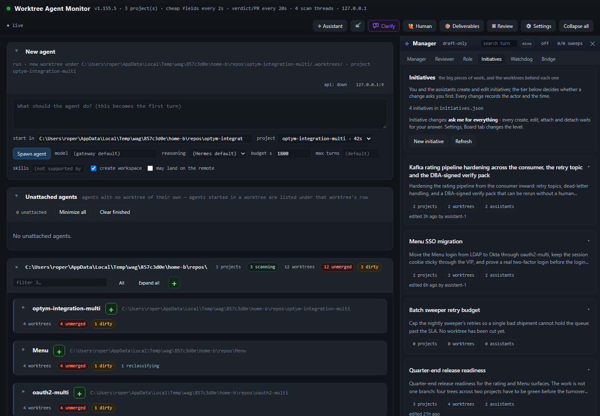
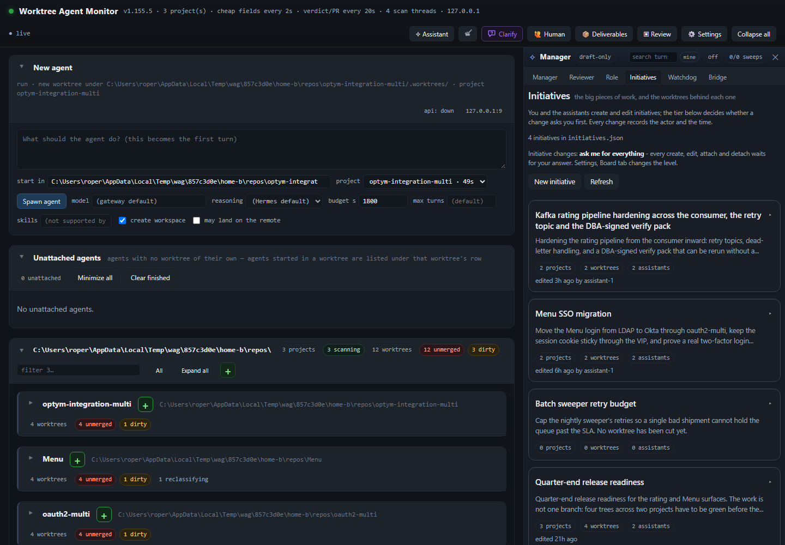
The docked rail at 479px is the frame the reader actually works in. Here the token sheet is doing the thing it was built for: the head is a title rather than a card, the four cards are separated by 12px of canvas plus a lit edge instead of a 1.12:1 hairline, and the descriptions are two lines with the dots in the right place because the cut was measured against the new line box (section 7.1 explains what happens when it is not).
| measure | before | after | read |
|---|---|---|---|
| type sizes | 9 | 5 | 18 / 15 / 12.5 / 11.5 / 10.5, and nothing off the ladder (measured: zero elements outside the five) |
| line boxes | 20 | 6 | 24 / 20 / 19 / 17 / 16 plus the pill's own 18px (--d-pill), which is a density token, not a type step |
| weights | 3 | 2 + 1 bold | 400 and 600 carry the tab; the single 700 left is the bold in the tier sentence |
| radius values | 6 | 6 | same count, but now monotone with nesting: card 12 > group 8 > row 6 > inset 4, plus the pill at 999. Before it was 0, 4, 6, 7, 8, 999 with no order |
| shadows | 0 | 4 | one per card (--e-2), plus a lit edge on each wave row (--e-1) |
| lane rules | 0 | 2 | one 2px rule per lane, coloured by the lane's own state |
| controls at 28/32px | 14 | 14 | heights unchanged. The type step moved the line box by 1px and the padding absorbed it, so the gate's 28px floor still holds |
| open card, pane 1440 | 673px | 694px | +21px, +3.1%: the description is 12.5/19 instead of 12/18.6 |
| open card, pane 1024 | 692px | 718px | +26px: the words widen, so the description loses a line and the waves gain one |
| open card, pane 768 | 895px | 940px | +45px: the template sentence takes its own row on each of the two waves, and at a 677px content column that tips one lane row into an extra 19px line. This is the width to watch: the same card is +21px at 1440 and +26px at 1024 |
| folded list, pane 1440 | 862px | 851px | -11px: the head loses its card padding and the chips lose their 2px vertical padding, so the list the reader scans most often is slightly shorter even though an open card is slightly taller |
| colour strings in the pane | 23 | 27 at 1440, 28 at 768 | the 41 literals did not disappear, they were named; the sheet paints four colours the tab never had (a lit edge, an inset bed, a pressed surface, a hairline) and removes none |
It is not a density win. One open card is 21 to 45px taller than it was, because the body text is half a pixel larger and two waves put their template sentence on its own row. If the reader's complaint is "one initiative takes a screen", this sheet does not answer it; the three changes in section 6 plus the 3-column split are what buy back the width, and folding the projects column is what would buy back the height (section 7.3).
Before the apply sheet, I injected only tokens + roles into the same page in the same state (one open card, pane 1024) and compared every rendered element's computed colour, border, radius, shadow, type, padding, gap, letter-spacing and geometry, in DOM order.
rename proof: 152 elements compared, 0 changedThat is the difference between a restyle and a re-theme. Renaming a colour cannot change what the reader sees, so if the tab ever needs to be reverted, roles.css is a no-op and apply.css is one file to drop. It also means the after captures differ from the before captures only by the rulings in section 4.2, which is why the numbers in that table are worth reading.
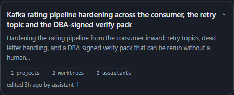
This is not a rendering artefact, it is the defect section 7.1 describes, reproduced on purpose: the two-line cut is measured from the line box the card drew, so a stylesheet that arrives after the first paint leaves a preview cut for 12/18.6 and drawn at 12.5/19. Every "after" capture in this report therefore injects the sheets at load, through an init script, which is what an implementation would do.
The reader kept the structure on purpose. Anything below that a restyle loses is a failed restyle, however modern it looks.
The list and the detail are one surface: no modal, no route, no second window. Four cards at a 117px pitch let a reader scan every initiative's name, description, three counts and an edit time in two thirds of a screen, then open one in place. This is the tab's best idea and a "modern" redesign is exactly the kind of change that throws it away in favour of a master-detail split. Keep. Cost of losing it: the reader loses the only view where all four initiatives are comparable at once.
paintInitDescription (public/assistant.js:3760) measures the dots with a canvas (:3720), binary-searches a Range for the last offset whose bottom edge fits two lines (3730), then backs off to a whole word that still fits. The result never ends mid-word and never overflows its box, and the dots always fit because their width was reserved. A redesign that reaches for -webkit-line-clamp: 2 loses both properties: the browser clips at an arbitrary character and the ellipsis is drawn over the text. Keep the function, and keep its contract (see 7.1: the contract is a line box, and the sheet changes it).
countChips (public/core/initiative-fold.js:120) draws projects, worktrees and assistants every time, so a zero reads as "0 worktrees" rather than as an absent chip. That distinction is the tab's honesty: an initiative with no worktree is a fact the reader needs, and a chip that vanishes when it is zero makes "none" and "not loaded" look the same. Keep. A tidier design that hides zero counts is a regression in information, not in taste.
The permission tier is written out: "ask me for everything - every create, edit, attach and detach waits for your answer". The four tiers are all, remove, own and none; a select showing "own" would be shorter and would tell the reader nothing. Keep the sentence. The sheet only changes its type step.
"lane lib/login.js - done", "runs in 1 tree", "2 lanes - closing this wave is ONE commit that names them all" (public/core/waves-lane.js:85, 138), the refusal "The lanes cannot be isolated, so this wave cannot close." (:102), and the empty state's "no waves recorded on this initiative yet" all carry the model. The boxes this round adds are decoration around them. Keep every sentence verbatim: a restyle that shortens "runs in 1 tree" to an icon has deleted the only place the tab explains what a lane is.
The pane is rebuilt on every snapshot. INIT_FOCUS_ATTRS (19 attributes, public/assistant.js:3939) and restoreInitFocus (:3958) put the reader's focus back on the same control, and .init-focus-restored re-paints the ring for a script focus. Keep the attribute list in step with any markup change: the list is a contract between the renderer and the restore, and a new control that carries none of the 19 attributes loses the reader's place on the next tick.
The card's name is a button with aria-expanded, and the description fold is a separate control ([data-init-desc-fold]). So a reader can open a card without opening its description, and a keyboard reader gets two distinct stops with their own labels. Keep both stops. The most common "cleaner" rewrite merges them into one row and silently removes one of the two.
There is not one box-shadow in 152 elements, and on a #10141A canvas that instinct is right: a 35% black shadow moves a channel by 6, so it cannot separate anything. The tab's mistake is not the missing shadow, it is that the 1px --line at 1.12:1 does not separate anything either, so the card has no edge at all. The sheet keeps the no-shadow principle and adds a lit edge (--e-1, a 4.5% white inset, which moves a channel by 9) rather than a dark one. Keep the tone values: every tone triple is already 8.2:1 or better on its own bed, and they are now named rather than repeated.
Ranked by perceived modernity per line of product CSS touched. Each one is a patch to public/style.css alone, with the token declarations it needs; none needs JavaScript and none changes markup.
| # | change | files / lines | what the eye gets | risk |
|---|---|---|---|---|
| 1 | The card becomes a plane: hairline edge, 12px radius, lit top edge | 1 file, 4 declarations + 3 tokens | Every card in the list becomes an object. 4 cards at once, at every width, in the dock too | The lit edge is a constant 4.5% white, so it does not follow the contrast slider; the radius ladder must be adopted with it or the card and the wave box disagree |
| 2 | The pane head stops being a card and gains a type step | 1 file, 6 declarations + 4 tokens | The top of the tab reads as a page: 18px title, then cards. Fixes the inversion where a card name is larger than the page title | Keyed to > .as-group:first-child, the product's own selector (style.css:4838). It cannot fire on the loading or error branches, which emit .as-empty; it would fire on any future first-child group |
| 3 | The lane gets a body: 2px state rule, inset bed, right-only radius | 1 file, 7 declarations + 2 tokens | The only region of the tab with no CSS at all becomes a stack. 8 lanes in this fixture, and the two-lane wave finally reads as two things | Costs 3px of width inside a 340px dock where the pane is already 331-348px; the rule must carry data-lane-state, never the wave's state, or a wave whose lanes disagree paints as one colour |
Change 1 touches four elements on every screen for four lines of CSS, and it is the change that makes the rest of the sheet legible: without an edge, a radius and a lit top do not exist, and the pane stays a field of words. Change 2 is six lines for the first thing the eye lands on, and it fixes a measurable inversion (13.5px title above 15px names) rather than adding decoration. Change 3 buys the most of the three in isolation, because it is the only place where the tab currently shows no design at all, but it costs the most care: seven declarations, a width budget at 340px, and a colour decision per lane state. If the reader wants one change and not three, take 1 and 2: together they are ten declarations and they change what the tab looks like from across the room.
If only one line is allowed: .init-card { border-color: #3c424d; border-radius: 12px; box-shadow: inset 0 1px 0 rgba(255,255,255,.045); }. One declaration block, one file, no new token, no JS. It is the difference between a list of paragraphs and a list of cards.
Six things in this tab are load-bearing under the look. A restyle that ignores them ships a bug that the eye cannot see and the keyboard finds.
The cut is measured from the rendered line box: initDescCutAt walks a Range against el.getBoundingClientRect().top + 2 * lineHeight. Change --t-body from 12 to 12.5 and the preview is still cut for the old box, so it draws three lines with the dots at the end of the third. Measured on this fixture: 57px tall against a 19px line box. The trigger for a re-cut today is the pane's width observer, which does not fire when only the font changes. This is the one change that cannot be done in CSS. The fix is small: re-run paintInitDescriptions(host) when the settings event that changes font size or zoom fires, or observe the element's height as well as the pane's width. Without it, the restyle is visually wrong at every width, in the one place the reader reads first.
DOCK_MIN = 340 (public/assistant.js:17) and clampDockWidth (:344) cap the rail at half the window. At a 768px window the pane measures 331 to 348px in this fixture. Any fixed width in the new look (a 320px projects column, a form control with a min-width, a 12px radius plus 16px padding on both sides) has to fit inside 331. The sheet's widths are all minmax(0, ...) or derived from the pane, which is why the 768 captures have no horizontal overflow.
Controls are 28px (row) and 32px (fold) today, and the gate already treats 28 as the floor. At 12.5px with a 16px line box and the existing padding they stay at 28 and 32 (measured: unchanged). A body step of 14px would put the same button at 30px and the row at 30, i.e. still legal but no longer aligned with the two-height density the reader has. If the type scale moves again, the control height has to be re-measured before it is believed.
CONTRAST_MAX (public/app.js:14891) rewrites --console, --bg, --surface, --card, --panel, --band, --hover, --panel-2, --line, and applyContrast (public/settings.js:615) writes them onto document.documentElement at the reader's setting, default 15%. A literal surface in a new sheet is a surface that stops responding: the reader raises the contrast and one new colour stays where it was. The sheet derives its two boundary greys from --line and --dim for exactly this reason, and keeps every surface a var().
The ring is #7fb2e8 at 2px, 7.59:1 against the card today. A card that gets lighter (a higher contrast setting, or a lighter --card) lowers that ratio; a card that gets darker raises it. If the restyle changes the card's fill, the ring has to be re-measured against the new fill, not copied. The sheet keeps the ring's value and adds the radius rule so a pill and a button each show a ring that follows its own corners.
.init-title is -webkit-line-clamp: 2 (public/style.css:4851). A title that fits one line at 13.5px can take two at 15px, and the clamp will then hide the rest of a long initiative's name rather than the 2 lines being an accident. In this fixture every name fits one line at 1440 and two at 463, so the step is safe here; a longer name is not. If the title step goes up again, the clamp has to be re-checked or the name becomes unreadable in the dock.
style.css:4982). Measured 318px of words against 638px of Projects at a 1022 pane. This is a grid change, not a colour: the sheet does it in CSS, but a "look only" round that skips it leaves the primary column the narrow one.grep -c '.wave-lane' is 0). It has to be written, not adjusted.public/core/waves-lane.js, memberHtml): at a 331px pane the wave block is 239px tall because each member pill wraps twice. A tighter member (id and title on line one, project on line two, no chip) is a markup shape, not a stylesheet. This is the one place where a look-only round cannot reach the reader's actual complaint about the wave.A fixture panel, not the reader's. tools/initiatives-fixture.mjs writes a WAG_HOME under scratch with three projects, nine worktrees, four initiatives and two assistant queues; startFixturePanel boots this tree's server.js against it on a free port. The reader's listener on 7331 was never addressed, so its pid and start time are untouched. Playwright comes from the Windows global npm prefix (%APPDATA%/npm/node_modules/playwright, chromium-1248), which is what tools/browser.mjs already resolves.
One run wrote all 19 images:
# from the run's scratch folder, which held capture.mjs and the three sheets printed in 3.3
node capture.mjsnode 26.3.0, Playwright chromium-1248, deviceScaleFactor: 1, every page headless. Each image is a page.screenshot with either a clip or the full window; the clip and viewport are recorded per image in the table below, because a clip is part of the evidence: a card photographed 376px down a scroller is cut by the image edge and not by its own border, which is why the script scrolls the card to the pane's top first.
| file | viewport | clip | what it shows |
|---|---|---|---|
| 01-current-pane-1440-folded | 1456x1400 | #as-initiatives | the tab at a 1438px pane, four cards folded |
| 02-current-card-1440 | 1456x1400 | one open card | the open initiative: grid 543/640, wave block, two lanes |
| 03-current-pane-1024-folded | 1040x1400 | #as-initiatives | the folded list at a 1022px pane |
| 04-current-card-1024 | 1040x1400 | one open card | the inversion: 318px of words beside 638px of Projects |
| 05-current-lane-zoom | 1040x1400 | .init-wavefold | the lane with no rule, no bed, no indent |
| 06-current-pane-768-folded | 784x1400 | #as-initiatives | the folded list at a 766px pane |
| 07-current-card-768 | 784x1400 | one open card | the single-column card, unsheeted |
| 08-current-window-1440-docked | 1440x1000 | window | the docked rail, pane 479px |
| 09-current-window-768-docked | 768x1000 | window | the docked rail at the 340px floor |
| 10-applied-pane-1440-folded | 1456x1400 | #as-initiatives | the same, with the sheets at load |
| 11-applied-card-1440 | 1456x1400 | one open card | three columns, the slack at the card's right edge |
| 12-applied-pane-1024-folded | 1040x1400 | #as-initiatives | the folded list, sheets |
| 13-applied-card-1024 | 1040x1400 | one open card | 634px of words beside 340px of Projects |
| 14-applied-lane-zoom | 1040x1400 | .init-wavefold | the lane with its state rule and bed |
| 15-applied-pane-768-folded | 784x1400 | #as-initiatives | the folded list, sheets |
| 16-applied-card-768 | 784x1400 | one open card | the single column, sheets, nothing clipped |
| 17-applied-window-1440-docked | 1440x1000 | window | the docked rail, sheets |
| 18-applied-window-768-docked | 768x1000 | window | the docked rail at the floor, sheets |
| 19-hazard-3-line-preview | 1440x1000 | one folded card | the sheet added after first paint: 3 lines, dots at the end |
For the "after" half, one init script appends the three sheets on DOMContentLoaded, before the tab's first paint. That is deliberate: addStyleTag after load is what produced the 3-line preview in 19, and an implementation ships its stylesheet in the page. The rename proof in 4.3 is the only place a sheet is added after load, because there the point is to compare the same painted page.
await page.addInitScript((text) => {
const add = () => {
const style = document.createElement("style");
style.id = "wag-token-sheet-b";
style.textContent = text;
(document.head || document.documentElement).appendChild(style);
};
if (document.readyState === "loading") document.addEventListener("DOMContentLoaded", add, { once: true });
else add();
}, `${TOKENS}\n${ROLES}\n${APPLY}`);Every number in sections 2 and 4 is getComputedStyle plus getBoundingClientRect over every rendered element under #as-initiatives, collected in the same page state as the photograph (folded or one card open), from the same run. Nothing is estimated and nothing is read off an image. The contrast ratios are computed from the resolved rgb() strings the browser reported, on the card's own resolved fill.
npm run test:changed -- --list answers: one changed file, docs/assets/initiatives-redesign/, and no test names or imports it. That is a sentence, not a pass, so I also ran the whole suite once: npm test (node --test --test-concurrency=4 test/*.test.js). The result is recorded in the pull request and repeated at the end of this report's run; no product file is in this diff, so the suite cannot be affected by it either way.
public/style.css edit plus the two JS lines in 7.1, and that is the reader's decision.Spend the palette that is already there. One plane per card, at the largest radius in a monotone ladder, with a lit top edge instead of a shadow; five type steps with fixed line boxes, every size and every line box a value; one pill height; a lane that is a quoted block under its wave, coloured by the lane's own state; and a page head that stops pretending to be a card. Two of those three things need only public/style.css. The third, the description preview, needs the re-cut hook in 7.1, and that is the whole bill.